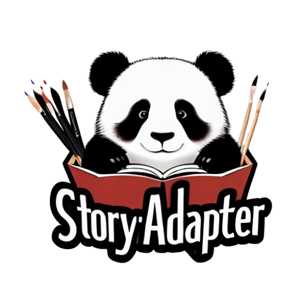

Abstract
Story visualization, the task of generating coherent images based on a narrative, has seen significant advancements with the emergence of text-to-image models, particularly diffusion models. However, maintaining semantic consistency, generating high-quality fine-grained interactions, and ensuring computational feasibility remain challenging, especially in long story visualization (i.e., up to 100 frames).
In this work, we propose a training-free and computationally efficient framework, termed Story-Adapter, to enhance the generative capability of long stories. Specifically, we propose an iterative paradigm to refine each generated image, leveraging both the text prompt and all generated images from the previous iteration.
Central to our framework is a training-free global reference cross-attention module, which aggregates all generated images from the previous iteration to preserve semantic consistency across the entire story, while minimizing computational costs with global embeddings. This iterative process progressively optimizes image generation by repeatedly incorporating text constraints, resulting in more precise and fine-grained interactions. Extensive experiments validate the superiority of Story-Adapter in improving both semantic consistency and generative capability for fine-grained interactions, particularly in long story scenarios.
Story-Adapter Architecture
Story-Adapter framework. Illustration of the proposed iterative paradigm, which consists of initialization, iterations in Story-Adapter, and implementation of Global Reference Cross-Attention (GRCA). Story-Adapter first visualizes each image only based on the text prompt of the story and uses all results as reference images for the future round. In the iterative paradigm, Story-Adapter inserts GRCA into SD. For the ith iteration of each image visualization, GRCA will aggregate the information flow of all reference images during the denoising process through cross-attention. All results from this iteration will be used as a reference image to guide the dynamic update of the story visualization in the next iteration.

Regular-length Story Visualization
Pigeon
Dinosaur and Traveler
Boy
Pepper
Girl
Animal Rescuer
City Monkey
Old Man and Monkey
The Boy's Journey
A Day for a Girl
Rain
Fruit
Long Story Visualization
Little Red Riding Hood and the Big Bad Wolf
Emperor and the Nightingale
Robinson Crusoe
Snowman
Loyal Dog
The Tortoise and the Hare
Winnie the Pooh
Pirate
Lonely Me
The Prince and the Princess
Qualitative Comparison of Different Methods
Qualitative comparison of story visualization shows AR-LDM and StoryGen generate coherent image sequences but degrade with story length due to autoregressive errors. StoryDiffusion and Story-Adapter perform well, though StoryDiffusion struggles with subject consistency and ID image flaws due to high computation demands. Story-Adapter better meets the requirements for effective story visualization.

BibTeX
If you find our work helpful for your research, please consider giving a citation 📃
@article{chen2023sharegpt4v,
title={ShareGPT4V: Improving Large Multi-Modal Models with Better Captions},
author={Chen, Lin and Li, Jisong and Dong, Xiaoyi and Zhang, Pan and He, Conghui and Wang, Jiaqi and Zhao, Feng and Lin, Dahua},
journal={arXiv preprint arXiv:2311.12793},
year={2023}
}